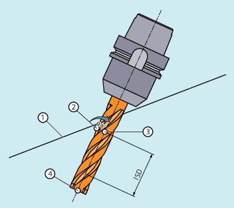

Further information
Path and orientation
The type of circumferential milling used here is implemented by defining a path (guide line) and the associated orientation. In this type of machining, the shape of the tool on the path is not relevant. Only the radius at the tool intervention point is decisive.

Circumferential milling
Approach behavior
The approach behavior is always NORM for the 3D variant of the tool radius compensation.
Behavior at outside corners
The G commands of group 18 (corner behavior, tool offset) are evaluated at the outside corners for circumferential milling with 3D TRC in the same way as for the conditions for the 2½D TRC:
G450: Transition circle (tool travels round workpiece corners on a circular path)
In contrast to the solution for the 2½D TRC, the inserted contour element at an outside corner is always a circle with a 0 radius, on which the tool radius compensation acts in the same way as on any other programmed path. It is not possible to insert conics instead of circles. In this case, the DISC address has no significance and is therefore not evaluated.
G451: Intersection of equidistant paths (tool backs off from the workpiece corner)
The intersection is determined by extending the offset curves of the two participating blocks and defining the intersection of the two blocks at the corner in the plane perpendicular to the tool orientation.
The intersection procedure (G451) is not used when at least one block containing a change to the tool orientation was inserted between the relevant traversing blocks. In this case, a circle is always inserted at the corner.
Behavior for changes in orientation at outside corners
The ORIC and ORID G commands are used to determine whether changes in orientation programmed between two blocks forming the corner are executed before the inserted circle block (ORID) is processed or at the same time (ORIC).
Insertion depth
The insertion depth of the milling tool is the distance of the milling tool reference point from the tip of the tool.
The milling tool reference point is the vertical projection of the milling tool machining point on the programmed path to the longitudinal axis of the tool.
The position of the machining point on the peripheral surface of the tool is set with the insertion depth.
① | Programmed path |
② | Milling tool machining point |
③ | Milling tool reference point |
④ | Milling tool tip |
ISD | Insertion depth (InSertion Depth) |
Insertion depth
Tool radius compensation referred to a differential tool
3D TRC for circumferential milling referred to a differential tool is activated via the CUT3DCD command. It should be applied if the programmed contour refers to the center-point path of a standard tool, and a tool other than a differential tool is used for machining. When calculating the 3D tool radius compensation, only the wear value of the radius of the active tool ($TC_DP15) and any programmed tool offsets OFFN and TOFFR/TOFFLR are taken into account. The basic radius ($TC_DP6) of the active tool is not taken into account.
Pocket milling with inclined side walls for circumferential milling with CUT3DC
In this 3D tool radius compensation, a deviation of the mill radius is compensated by infeed toward the surface normals to be machined. The plane, in which the milling tool face is located, remains unchanged if the insertion depth ISD has remained the same. For example, a milling tool with a smaller radius than a standard tool would not reach the pocket base, which is also the limitation surface. For automatic tool infeed, this limitation surface must be known to the control, see Section "3D circumferential milling taking into account a limitation surface (CUT3DCC, CUT3DCCD)".
Advanced Surface / Top Surface
| Note |
When applying tool radius compensation CUT3DCD in combination with the "Advanced Surface" or "Top Surface" option (requiring a license), the setting recommendations regarding "Advanced Surface" / "Top Surface" must be observed. A special test program is provided in the SIOS portal for checking the set data. → Test program for |